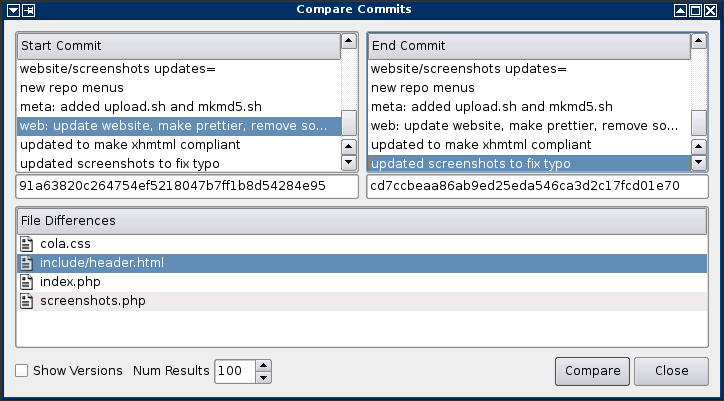
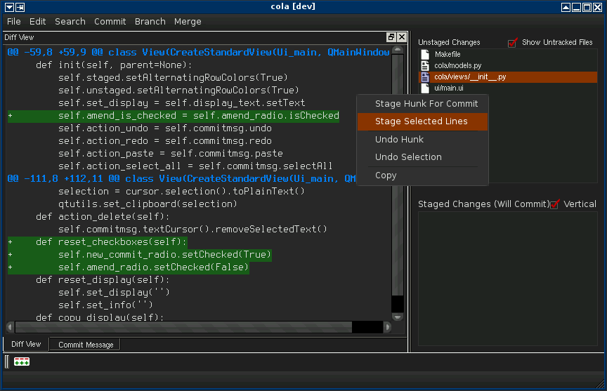
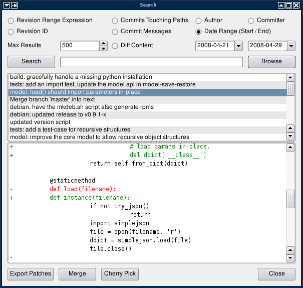
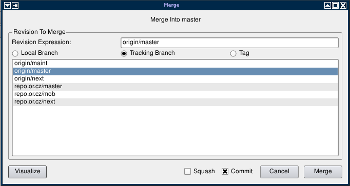
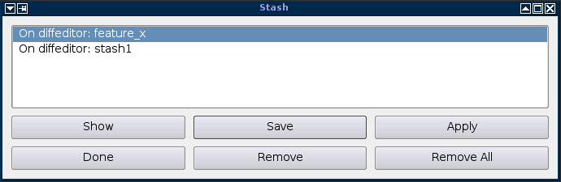
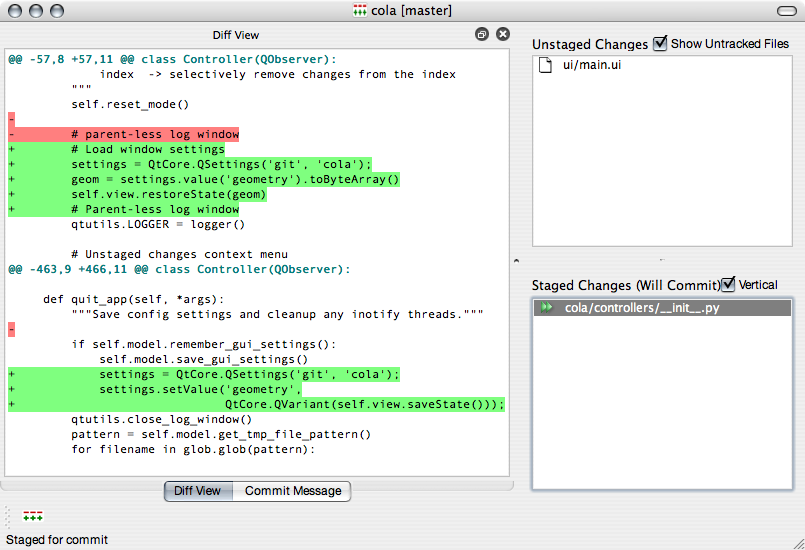
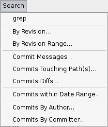
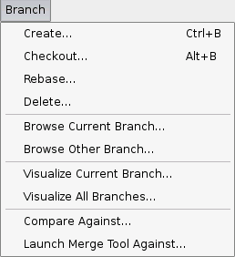
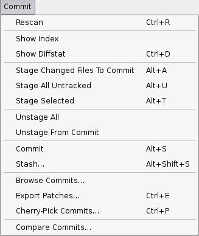

Here's what the latest version of cola looks like. The repo's status is succinctly displayed on the right-hand side of the user interface. You can easily interact with files and source code by right-clicking in the interface. cola allows you to stage hunks or even just single lines.
You can launch specific commands by right-clicking in the status area. Double-clicking a modified file stages it for commit. Double-clicking a staged file unstages it. Directly clicking on the file's icon will trigger the stage/unstage actions as well.
Some of the screenshots below show the older (pre-1.2.x) cola interface. They're kept here for historical purposes.

git-cola can compare arbitrary commits using standard merge tools.
This dialog integrates with any merge tool supported by 'git-mergetool'

git-cola makes it easy to interactively edit the index.
The gui is skinnable and comes with a built-in 'dark' theme accessible
via --style=dark.

you can search commit messages, content, authors, paths, date ranges, etc.

merge branches using a simple merge dialog

manage git stashes

git-cola is cross-platform and runs on linux, macos, windows, etc.

search commits

manage branches

commit actions
check back soon for more